GeoScript Groovy Releases¶
1.14.0¶
The 1.14 release of GeoScript is build on Groovy 2.5.8, GeoTools 22.0, and the Java Topology Suite 1.16.1 and requires Java 8.
The SpatiaLite Workspace in now based on OGR.
Added a Geometry TWKB Reader.
Set user agent for OSM tile requests.
Added a LineString and MultiLineString createPointsAlong(double distance) method.
Fixed WMSLayer getBounds method.
Added Band.getDescription() method.
Added an example for creating a geopackage database from natural earth data.
Added an example for creating a MBTiles file from natural earth data.
1.13.0¶
The 1.13 release of GeoScript is built on Groovy 2.5.6, GeoTools 21.0, and the Java Topology Suite 1.16.0 and requires Java 8.
Added a Raster mosaic method:
Raster mosaicedRaster = Raster.mosaic([raster1, raster2, raster3])
Add metatile support to the Tile generator:
TMS tms = new TMS("world", "png", dir, pyramid)
TileRenderer renderer = new ImageTileRenderer(tms, [ocean, countries])
TileGenerator generator = new TileGenerator(verbose: true)
generator.generate(tms, renderer, 0, 4, metatile: [width:4, height: 4])
Updates due to GeoTools Java 11 refactoring.
Fixed Raster getValueAsString method.
Fixed all usages of Filter.intersects to include geometry name
Improved CSV reading when semi-colon is a part of the name.
1.12.0¶
The 1.12 release of GeoScript is built on Groovy 2.4.15, GeoTools 20.0, and the Java Topology Suite 1.16.0 and requires Java 8.
Update JTS to 1.16.0
Switch jiffle from jaitools to geosolutions.
Switch to si.uon.SI.
Calculate a hillshade from a Relief:
import geoscript.layer.GeoTIFF
import geoscript.layer.Raster
import geoscript.render.Draw
File file = new File("mt_rainier.tif")
GeoTIFF geoTIFF = new GeoTIFF(file)
Raster raster = geoTIFF.read()
Raster shadedReliefRaster = raster.createShadedRelief(1.0, 25, 260)
File outFile = new File("mt_rainier_shadedrelief.tif")
new GeoTIFF(outFile).write(shadedReliefRaster)
Draw.draw(shadedReliefRaster, out: new File("mt_rainier_map.png"), size: [800,400])
Create Band with a description and min and max values:
Band band = new Band("Red",0,255)
Create Band with a description and min and max values and no data value:
Band band = new Band("Elevation",100,200, 200)
Create a Raster with bounds, size, and a List of Bands:
Raster raster = new Raster(
new Bounds(-180,-90,180,90,"EPSG:4326"),
400,300,
[
new Band("red", 0, 255, 256),
new Band("green", 0, 255, 256),
new Band("blue", 0, 255, 256)
]
)
Add an example for creating a new Raster and setting random values:
import geoscript.filter.Color
import geoscript.geom.Bounds
import geoscript.layer.Band
import geoscript.layer.GeoTIFF
import geoscript.layer.Raster
// Create a new Raster
Raster raster = new Raster(
new Bounds(-180,-90,180,90,"EPSG:4326"),
400,300,
[
new Band("red", 0, 255, 256),
new Band("green", 0, 255, 256),
new Band("blue", 0, 255, 256)
]
)
// Set values of each pixel
raster.eachCell { double value, double x, double y ->
Color color = Color.randomPastel
raster.setValue([x,y], color.rgb[0], 0)
raster.setValue([x,y], color.rgb[1], 1)
raster.setValue([x,y], color.rgb[2], 2)
}
// Write the Raster to disk
File file = new File("random.tif")
GeoTIFF geotiff = new GeoTIFF(file)
geotiff.write(raster)
Add getMinValue and getMaxValue to Raster. Both methods first tries to get the value from the Band’s metadata and then calculates it from the actual data.
Viewer.plot should handle closing the Window like other viewers.
Add data label option the Scatter plot.
Calling Geometry.validReason on a valid geometry should return an empty string.
1.11.0¶
The 1.11 release of GeoScript is built on Groovy 2.4.14, GeoTools 19.0, and the Java Topology Suite 1.13 and requires Java 8.
Add support for storing PBF vector tiles in MBTiles database:
File file = new File("world.mbtiles")
Pyramid pyramid = Pyramid.createGlobalMercatorPyramid()
pyramid.origin = Pyramid.Origin.TOP_LEFT
VectorTiles vectorTiles = new VectorTiles(
"world",
file,
pyramid,
"pbf"
)
Fix getting values from Rasters with short values.
Set the name when creating DBTiles.
Add tile counts and min and max zoom level methods to DBTiles:
DBTiles dbtiles = new DBTiles("jdbc:sqlite:${dbFile}","org.sqlite.JDBC")
List stats = dbtiles.tileCounts
stats.eachWithIndex { Map stat, int index ->
println stat.zoom
println stat.tiles
println stat.total
println stat.percent
}
println dbtiles.minZoom
println dbtiles.maxZoom
Add getMetadata method to DBTiles:
DBTiles dbtiles = new DBTiles("jdbc:sqlite:${dbFile}","org.sqlite.JDBC")
Map<String,String> metadata = dbtiles.metadata
println metadata.name
println metadata.type
println metadata.version
println metadata.description
println metadata.format
println metadata.bounds
println metadata.attribution
Improve PBF VectorTile reading and writing.
Add mercator top left wellknown pyramid name.
Add pretty print option to geojson writing.
Include the gt-epsg-extension GeoTools Library to support more projections:
Projection proj = new Projection("EPSG:104905")
Add a Filter.equals method to create a Filter where a Property equals some Literal value:
Filter filter = Filter.equals("NAME", "Washington")
The GeoScript.unzip method now correctly unzips nested directories.
The SimpleStyleReader correctly applies stroke and fill attributes when a shape is specified:
import geoscript.geom.*
import geoscript.layer.Layer
import geoscript.workspace.*
import geoscript.feature.Schema
import geoscript.render.Map as GMap
import geoscript.style.io.SimpleStyleReader
Bounds bounds = new Bounds(-180,-90,180,90,"EPSG:4326")
MultiPoint points = Geometry.createRandomPoints(bounds.geometry, 100)
Workspace workspace = new Memory()
Layer layer = workspace.create(new Schema("points", [[name: "geom", type: "Point"]]))
points.geometries.each {
layer.add([geom: it])
}
layer.style = new SimpleStyleReader().read("stroke=black fill=blue shape-type=star shape-size=14")
GMap map = new GMap(layers: [layer])
map.renderToImage()
Add a UniqueValuesReader for reading text files that contain a color per value. Very useful when styling geologic maps:
import geoscript.layer.Layer
import geoscript.layer.Shapefile
import geoscript.render.Map
import geoscript.style.io.UniqueValuesReader
import static geoscript.GeoScript.download
import static geoscript.GeoScript.unzip
File dir = new File("mars")
dir.mkdir()
unzip(
download(new URL("https://astropedia.astrogeology.usgs.gov/download/Mars/Geology/Mars15MGeologicGISRenovation.zip"),
new File(dir, "mars.zip"), overwrite: false
)
)
Layer layer = new Shapefile("mars/I1802ABC_Mars_global_geology/Shapefiles/I1802ABC_Mars2000_Sphere/geo_units_oc_dd.shp")
UniqueValuesReader styleReader = new UniqueValuesReader("UnitSymbol", "polygon")
layer.style = styleReader.read(new File("mars/I1802ABC_Mars_global_geology/I1802ABC_geo_units_RGBlut.txt"))
Map map = new Map(layers: [layer])
map.render(new File("mars_geology.png"))
1.10.0¶
The 1.10.0 release of GeoScript is built on Grooovy 2.4.12, GeoTools 18.0, and the Java Topology Suite 1.13 and requires Java 8.
A Sqlite Workspace based on the OGR non-spatialite Sqlite format:
Sqlite sqlite = new Sqlite(new File("naturalearth"))
Layer countries = sqlite.get("countries")
Layer ocean = sqlite.get("ocean")
Read and Write Geometry in the GeoPackage format:
GeoPackageReader reader = new GeoPackageReader()
String hexString = "4750000200000000405bc00000000000405bc00000000000c047800000000000c0478000000000000000000001405bc00000000000c047800000000000"
Point point = reader.read(hexString)
println point
POINT (111 047)
GeoPackageWriter writer = new GeoPackageWriter()
Point p = new Point(111,-47)
String hexString = writer.write(p)
println hexString
4750000200000000405bc00000000000405bc00000000000c047800000000000c0478000000000000000000001405bc00000000000c047800000000000
Store tiles in any JDBC database (like H2, Postgres, or SQLite) in the familiar MBTiles format:
import geoscript.layer.*
import geoscript.style.io.SimpleStyleReader
import javax.imageio.ImageIO
import static geoscript.GeoScript.download
import static geoscript.GeoScript.unzip
// Create a directory fo
File dir = new File("dbtiles")
dir.mkdir()
// Download data from natural earth
File shpDir = new File("naturalearth")
[
[name: "countries", url: "http://www.naturalearthdata.com/http//www.naturalearthdata.com/download/110m/cultural/ne_110m_admin_0_countries.zip"],
[name: "ocean", url: "http://www.naturalearthdata.com/http//www.naturalearthdata.com/download/110m/physical/ne_110m_ocean.zip"]
].each { Map item ->
unzip(download(new URL(item.url), new File(shpDir, "${item.name}.zip"), overwrite: false))
}
// Use simple style reader to create styles
SimpleStyleReader styleReader = new SimpleStyleReader()
// Get Layers and their styles
Layer ocean = new Shapefile("naturalearth/ne_110m_ocean.shp")
ocean.style = styleReader.read("fill=#88caf8")
Layer countries = new Shapefile("naturalearth/ne_110m_admin_0_countries.shp")
countries.style = styleReader.read("stroke=black stroke-width=0.5 fill=white")
// DBTiles with h2
File file = new File("world.db")
DBTiles dbtiles = new DBTiles("jdbc:h2:${file}","org.h2.Driver", "World", "A map of the world")
TileRenderer renderer = new ImageTileRenderer(dbtiles, [ocean, countries])
TileGenerator generator = new TileGenerator(verbose: true)
generator.generate(dbtiles, renderer, 0, 4)
(0..3).each{int zoom ->
Raster raster = dbtiles.getRaster(dbtiles.tiles(zoom))
ImageIO.write(raster.image, "png", new File(dir, "h2_${zoom}.png"))
}
dbtiles.close()
The Label Symbolizer now has a strikethrough property:
def statesShp = new Shapefile("states.shp")
statesShp.style = (new Fill("#E6E6E6") + new Stroke("#4C4C4C",0.5)) +
(new Shape("#66CCff", 6, "circle").stroke("#004080") + new Transform("centroid(the_geom)")).zindex(1) +
(new Label("STATE_NAME").strikethrough(true).font(new Font("normal", "bold", 10, "serif")).fill(new Fill("#004080")))
def map = new Map(
width: 600,
height: 400,
bounds: new Bounds(-114.675293,37.317752,-83.078613,49.210420,"EPSG:4326"),
fixAspectRatio: true
)
map.proj = "EPSG:4326"
map.addLayer(statesShp)
map.render(new File("states_label_strikethrough.png"))
The Label Symbolizer now has wordSpacing and characterSpacing properties:
def statesShp = new Shapefile("states.shp")
statesShp.style = (new Fill("#E6E6E6") + new Stroke("#4C4C4C",0.5)) +
(new Shape("#66CCff", 6, "circle").stroke("#004080") + new Transform("centroid(the_geom)")).zindex(1) +
(new Label("STATE_NAME").wordSpacing(10).characterSpacing(5).font(new Font("normal", "bold", 10, "serif")).fill(new Fill("#004080")))
def map = new Map(
width: 600,
height: 400,
bounds: new Bounds(-114.675293,37.317752,-83.078613,49.210420,"EPSG:4326"),
fixAspectRatio: true
)
map.proj = "EPSG:4326"
map.addLayer(statesShp)
map.render(new File("states_label_spacing.png"))
Create a map cube using the gnomonic cube sphere projection:
MapCube mapCube = new MapCube(title: "The Earth Map Cube", source: "Natural Earth", drawOutline: true)
mapCube.render([ocean, countries], new File("map_cube.png"))
Generate a grid with triangles:
Bounds b = new Bounds(0,0,10,10)
Draw.draw(b.getGrid(5,5,"triangle"), out: "triangles.png")
Several methods were added to the Color class:
Color c = new Color("#6495ED")
Darken:
c.darken(0.50)
Lighten:
c.lighten(0.20)
Constrast:
c.contrast(new Color("navy"), new Color("white"), 0.20)

Desaturate:
c.desaturate(0.33)
Saturate:
c.saturate(0.33)
Grayscale:
c.grayscale(0.45)
Mix:
c.mix(new Color("wheat"), 0.15)
Shade:
c.shade(0.45)
Spin:
c.spin(0.61)
Tint:
c.tint(0.10)
1.9.0¶
The 1.9.0 release of GeoScript is built on Grooovy 2.4.10, GeoTools 17.0, and the Java Topology Suite 1.13 and requires Java 8.
Alot of work went into improving documentation.
Javadocs are now published online.
http://geoscript.github.io/geoscript-groovy/api/1.9.0/index.html
And a GeoScript Groovy Cookbook is slowly but surely adding simple recipes.
https://jericks.github.io/geoscript-groovy-cookbook/index.html
https://jericks.github.io/geoscript-groovy-cookbook/index.pdf
The Label Symbolizer now has an underline method:
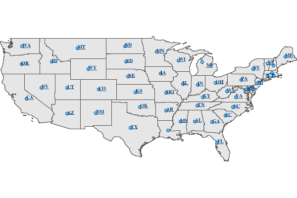import geoscript.layer.Shapefile import geoscript.render.Map import geoscript.style.* def statesShp = new Shapefile("states.shp") statesShp.style = (new Fill("#E6E6E6") + new Stroke("#4C4C4C",0.5)) + (new Shape("#66CCff", 6, "circle").stroke("#004080") + new Transform("centroid(the_geom)")).zindex(1) + (new Label("STATE_ABBR").underline(true).font(new Font("normal", "bold", 10, "serif")).fill(new Fill("#004080"))) def map = new Map(width: 600, height: 400, fixAspectRatio: true) map.proj = "EPSG:4326" map.addLayer(statesShp) map.bounds = statesShp.bounds map.render(new File("states_underline.png"))Add support for the WagnerV projection as a well known name:
Projection proj = new Projection("WagnerV") println projCreate Colors with rgb and hsl function syntax:
Color color1 = new Color("rgb(255,0,255)") Color color2 = new Color("hsl(0,1,0.5)")Raster can pretty print values:
Format format = new GeoTIFF("earth.tif") Raster raster = format.read() println raster.getValuesAsString(0,0,7,5,0) 0.100 0.450 0.193 0.200 12.456 0.200 0.000 0.100 1.450 1.193 1.200 112.456 1.200 0.000 0.100 1.450 2.193 3.200 212.456 1.200 0.000 0.100 1.450 1.193 1.200 112.456 1.200 0.000 0.100 0.450 0.193 0.200 12.456 0.200 0.000 println raster.getValuesAsString(0,0,7,5,0, prettyPrint: true) ----------------------------------------------------------------------- | 0.100 | 0.450 | 0.193 | 0.200 | 12.456 | 0.200 | 0.000 | ----------------------------------------------------------------------- | 0.100 | 1.450 | 1.193 | 1.200 | 112.456 | 1.200 | 0.000 | ----------------------------------------------------------------------- | 0.100 | 1.450 | 2.193 | 3.200 | 212.456 | 1.200 | 0.000 | ----------------------------------------------------------------------- | 0.100 | 1.450 | 1.193 | 1.200 | 112.456 | 1.200 | 0.000 | ----------------------------------------------------------------------- | 0.100 | 0.450 | 0.193 | 0.200 | 12.456 | 0.200 | 0.000 | -----------------------------------------------------------------------SLDWriter has optional named parameters for the number of spaces to use while indenting and whether to export default values or not:
Symbolizer sym = new Fill("wheat") + new Stroke("brown") SLDWriter writer = new SLDWriter() String sld = writer.write(sym, exportDefaultValues: true, indentation: 4) println sld <?xml version="1.0" encoding="UTF-8"?> <sld:StyledLayerDescriptor xmlns="http://www.opengis.net/sld" xmlns:sld="http://www.opengis.net/sld" xmlns:ogc="http://www.opengis.net/ogc" xmlns:gml="http://www.opengis.net/gml" version="1.0.0"> <sld:UserLayer> <sld:LayerFeatureConstraints> <sld:FeatureTypeConstraint/> </sld:LayerFeatureConstraints> <sld:UserStyle> <sld:Name>Default Styler</sld:Name> <sld:FeatureTypeStyle> <sld:Name>name</sld:Name> <sld:Rule> <sld:PolygonSymbolizer> <sld:Fill> <sld:CssParameter name="fill">#f5deb3</sld:CssParameter> <sld:CssParameter name="fill-opacity">1.0</sld:CssParameter> </sld:Fill> </sld:PolygonSymbolizer> <sld:LineSymbolizer> <sld:Stroke> <sld:CssParameter name="stroke">#a52a2a</sld:CssParameter> <sld:CssParameter name="stroke-linecap">butt</sld:CssParameter> <sld:CssParameter name="stroke-linejoin">miter</sld:CssParameter> <sld:CssParameter name="stroke-opacity">1.0</sld:CssParameter> <sld:CssParameter name="stroke-width">1</sld:CssParameter> <sld:CssParameter name="stroke-dashoffset">0.0</sld:CssParameter> </sld:Stroke> </sld:LineSymbolizer> </sld:Rule> </sld:FeatureTypeStyle> </sld:UserStyle> </sld:UserLayer> </sld:StyledLayerDescriptor>
1.8.0¶
The 1.8.0 release of GeoScript is built on Grooovy 2.4.7, GeoTools 16.0, and the Java Topology Suite 1.13 and requires Java 8.
Create Projections using well known names:
new Projection("WGS84") new Projection("Mollweide") new Projection("WagnerIV") new Projection("WorldVanderGrintenI")Create a Raster from Tiles around a Point:
Raster raster = osm.getRaster( Projection.transform(Geometry.fromWKT(wkt), "EPSG:4326", "EPSG:3857") as Point, z, 400, 400 )Create a Directory Workspace from a zipped shapefile URL:
Directory dir = Directory.fromURL( new URL("http://www.naturalearthdata.com/http//www.naturalearthdata.com/download/110m/cultural/ne_110m_admin_0_countries.zip"), new File("naturalearth") )Added a getTileCoordinates() method to the Pyramid class:
Pyramid pyramid = Pyramid.createGlobalMercatorPyramid() Bounds b = new Bounds( -124.73142200000001, 24.955967, -66.969849, 49.371735, "EPSG:4326" ).reproject("EPSG:3857") Map coords = pyramid.getTileCoordinates(b, pyramid.grid(4))Added getDataSource() method to the Database Workspace.
Added Stamen’s Terrain layer to the OSM.getWellKnownOSM() method:
TileLayer.getTileLayer([type: 'osm', name: 'stamen-terrain'])GeoPackage.delete() method removes a GeoPackage Tile Layer.
Added Filter.id() and Filter.ids() methods:
Filter filter = Filter.id("points.1") Filter filter = Filter.ids(["points.1","points.2","points.3"])Added XmlSchemaReader and XmlSchemaWriter:
String str = """<schema> <name>points</name> <projection>EPSG:4326</projection> <geometry>geom</geometry> <fields> <field> <name>geom</name> <type>Point</type> <projection>EPSG:4326</projection> </field> <field> <name>name</name> <type>String</type> </field> <field> <name>price</name> <type>Float</type> </field> </fields> </schema>""" SchemaReader reader = new XmlSchemaReader() Schema schema = reader.read(str)Fixed Raster.eachCell so it visits every cell.
Added normalize and convolve methods to Raster.
Added getMinZoom() and getMaxZoom() methods to GeoPackage TileLayer.
1.7.0¶
The 1.7.0 release of GeoScript is built on Grooovy 2.4.6, GeoTools 15.0, and the Java Topology Suite 1.13 and requires Java 8.
This version focused on making GeoScript more modular and extensible. GeoScript is more extensible by providing Service Provider Interface (SPI) end points for Readers, Writer, Formats, TileLayers and Workspaces. GeoScript is more modular by using Groovy’s Extension Modules to add methods dynamically.
Most of the other features of 1.7 were contributed by the community (thank you sbortman, blackrez, and gnafu) or driven by the development of geoc (a geospatial commandline application), geo-shell (an interactive shell for geospatial analysis), and MBTilesServer (a Spring Boot based web app for serving MBtiles maps).
Tile
MBTiles got methods to access metdata and minimum and maximum zoom levels:
MBTiles layer = new MBTiles(new File("states.mbtiles")) println layer.metadata println layer.minZoom println layer.maxZoomGeoPackage and MBTiles both got a new getTileCount() method that returns statistics on the number of tiles present per zoom level:
GeoPackage layer = new GeoPackage(new File("states.gpkg"), "states") List stats = layer.tileCounts stats.eachWithIndex { Map stat, int index -> println "${index}). ${stat.zoom} ${stat.tiles} ${stat.total} ${stat.percent}" }The Tile module got a new TileLayer called GeneratingTileLayer that can generate Tiles on demand:
Layer layer = new Shapefile("states.shp") layer.style = new Fill("wheat") + new Stroke("navy", 0.1) File file = folder.newFile("states.mbtiles") TileLayer tileLayer = new MBTiles(new File("states.mbtiles"), "states", "A map of the united states") ImageTileRenderer tileRenderer = new ImageTileRenderer(tileLayer, layer) GeneratingTileLayer generatingTileLayer = new GeneratingTileLayer(tileLayer, tileRenderer)The ImageTileLayer base class now makes sure that the Bounds passed to the getRaster() method is in the correct projection.
Finally, the OSM TileLayer has a static method for creating TileLayers with well known OSM based web serivces:
OSM.getWellKnownOSM("osm") OSM.getWellKnownOSM("stamen-toner") OSM.getWellKnownOSM("stamen-toner") OSM.getWellKnownOSM("stamen-toner-lite") OSM.getWellKnownOSM("stamen-watercolor") OSM.getWellKnownOSM("mapquest-street") OSM.getWellKnownOSM("mapquest-satellite")Style
The Style module added a YSLD Reader and Writer:
Symbolizer sym = new Fill("wheat") + new Stroke("brown") YSLDWriter writer = new YSLDWriter() String yaml = writer.write(sym)The Style module also got a new SimpleStyleReader that can easily create simple styles:
SimpleStyleReader styleReader = new SimpleStyleReader() // Fill and Stroke Style style = styleReader.read("fill=#555555 fill-opacity=0.6 stroke=#555555 stroke-width=0.5") // Shape with Fill and Stroke style = styleReader.read("fill=navy stroke=yellow shape-type=circle") // Shape with Fill and Stroke with Label style = styleReader.read("fill=#554466 stroke=255,255,0 shape-type=triangle label=NAME label-size=12") // Just fill style = styleReader.read("fill=#554466") // Just stroke style = styleReader.read("stroke=#554466") // Just shape style = styleReader.read("shape=#554466")This version also updated default style and inherited a perpendicular offset for Strokes from the GeoTools project.
Renderer
sbortman added a new GeoTIFF Renderer:
Layer layer = new Shapefile(new File("states.shp")) layer.style = new Stroke('black', 0.1) + new Fill('gray', 0.75) Map map = new Map(layers: [layer], backgroundColor: "white") GeoTIFF geotiff = new GeoTIFF() def img = geotiff.render(map)Users can now configure MapWindow and Window’s do when the ui is closed (hide, exit, dispose):
Map map = new Map(layers:[new Shapefile("states.shp")]) Window window = new Window() window.display(map, close: 'hide')The Map now guards against null projections in Bounds.
Geometry
The Geometry IO package received a Google Polygon Encoder:
GooglePolylineEncoder encoder = new GooglePolylineEncoder() LineString lineString = new LineString([-120.2, 38.5], [-120.95, 40.7], [-126.453, 43.252]) String str = encoder.write(lineString)The Bounds expand method is now more robust.
An offset method was added to the Geometry class:
Geometry g = Geometry.fromWKT("LINESTRING (0 5, 5 5)").offset(2)IO
Several optional parameters were added to the Feature GeoJSON Writer to control the number of decimals and how to encode feature bounds, feature collection bounds, feature collection crs, feature crs, and whether to encode null values.
The CSVReader can handle multiple geometry types.
The GeoScript.zip method now includes nested directories and GeoScript.unzip creates directories if necessary.
Workspace
Workspaces have much better connection string and maps which are useful for command line applications:
Workspace w = Workspace.getWorkspace("dbtype=postgis database=postgres host=localhost port=5432 user=postgres passwd=postgres") Workspace w = Workspace.getWorkspace("database=layers.gpkg dbtype=geopkg user=me passwd=s$cr$t")Users of the OGR Workspace can now use the static setErrorHandler(quiet, logging, or default) method to control OGR’s logging:
OGR.setErrorHandler("quiet")All workspaces now include a Workspace.remove(String name) method that can remove a Layer from the Workspace.
The Shapefile module inherited a Shapefile.dump(File,Layer) method from GeoTools:
Directory workspace = Shapefile.dump(dir, layer)Shapefile and Property layers can look up side car SLD or CSS files.
The Property Workspace got a getFile() method.
The WFS Workspace can optionally take user and password parameters.
1.6.0¶
The 1.6.0 release of GeoScript is built on Groovy 2.4.4, GeoTools 14.0, and the Java Topology Suite 1.13.
Significant new features include support for Geobuf, a OGR Workspace, and improvements to the Tile module.
GeoHash
GeoHash support was ported from the excellent node-geohash module. It supports encoded and decoding Points and Bounds.:
GeoHash geohash = new GeoHash() geohash.encode(new Point(112.5584, 37.8324)) >>> "ww8p1r4t8" geohash.encodeLong(new Point(112.5584, 37.8324)) >>> 4064984913515641 Bounds bounds = geohash.decodeBounds("ww8p1r4t8") >>> "(112.55836486816406,37.83236503601074,112.5584077835083,37.83240795135498)"Geobuf
Geobuf is an emerging new format from MapBox. GeoScript support for Geobuf includes a Workspace and Geometry, Feature, and Layer readers and writers:
File directory = new File("data") Geobuf geobuf = new Geobuf(directory) // Create an in memory Layer Memory memory = new Memory() Layer memoryLayer = memory.create('locations',[new Field("geom", "Point"), new Field("name", "String")]) memoryLayer.add([new Point(1,1), "Seattle"]) memoryLayer.add([new Point(2,2), "Portland"]) memoryLayer.add([new Point(3,3), "Tacoma"]) // And add it to Geobuf geobuf.add(memoryLayer) GeobufWriter writer = new GeobufWriter() Schema schema = new Schema("houses", [new Field("geom","Point"), new Field("name","string"), new Field("price","float")]) Feature feature = new Feature([new Point(111,-47), "House", 12.5], "house1", schema) String hex = writer.write(feature) >>> "0a046e616d650a057072696365100218062a1f0a0c08001a0880e7ed69ffa6e92c6a070a05486f7573656a060a0431322e35"Workspace
In addition to the new Geobuf Workspace, a OGR Workspace was also added. This requires the GDAL/OGR native library to be installed with Java/JNI support.:
File shpFile = new File("states.shp") Layer shpLayer = new Shapefile(shpFile) File file = new File("states.sqlite") OGR ogr = new OGR("SQLite", file.absolutePath) Layer layer = ogr.create(shpLayer.cursor, options: [ "SPATIALITE=YES" ])WFS support upgraded to the new WFS-NG library. Major thanks to Scottie and Neils who helped trouble shoot.
Geometry
The Geometry module some small improvements. A LineString.close() method creates a LinearRing. The GeometryCollection.narrow() method returns the most specific geometry type possible. If all geometries are Points, narrow will return a MultiPoint. Finally, The Bounds.getCorners() returns a list of the 4 corners as Points.
Layer
The major improvement to the Layer module is the wrapping of the GeoTools gt-grid module in a Graticule class that makes creating graticule based vector grids extremely easy.:
Layer layer = Graticule.createSquares(new Bounds(110.0, -45.0, 160.0, -5.0, "EPSG:4326"), 10, -1) File dir = new File("squares") Workspace workspace = new Directory(dir) Layer layer = Graticule.createSquares(new Bounds(110.0, -45.0, 160.0, -5.0, "EPSG:4326"), 10, 1, workspace: workspace, layer: "squares") Schema schema = new Schema("hexagon", [ new Field("geom", "Polygon"), new Field("color", "java.awt.Color") ]) Bounds b = new Bounds(0,0,100,100) Layer layer = Graticule.createHexagons(b, 5.0, -1.0, "flat", schema: schema, setAttributes: { GridElement e, Map attributes -> int green = (255 * e.center.x / b.width) as int int blue = (255 * e.center.y / b.height) as int attributes["color"] = new Color(0, green, blue) })Raster
The Raster module saw some minor improvements. A Format.has(String name) checks to see if a Raster by that name exists. A few more Raster functions were added: log, exp, and absolute. Finally, this version adds support for file names and String urls when loading Rasters using the Format.getFormat() method.
Tile
The Tile module continued to improve with help from gpotts.
gpotts fixed a bug that assumed all Tile Grids started at 0
You can now delete tiles from a TileLayer:
GeoPackage layer = new GeoPackage(newFile, "states") Tile tile = layer.get(4, 2, 3) layer.delete(tile)The TileGenerator has an option to only generate missing tiles:
TileGenerator generator = new TileGenerator() generator.generate(mbtiles, renderer, 0, 2, missingOnly: true)TileLayer can now be loaded from a connection parameter string (which is very useful for command line apps):
TileLayer tileLayer = TileLayer.getTileLayer("type=mbtiles file=states.mbtiles") TileLayer tileLayer = TileLayer.getTileLayer("type=tms file=/Users/geoscript/tiles format=jpeg") TileLayer tileLayer = TileLayer.getTileLayer("type=vectortiles file=vectortilesdir format=mvt pyramid=GlobalMercator")The TileLayer.getTileRenderer() static method returns a default TileRenderer for the given TileLayer.
PBF Vector Tiles now check for empty sub fields.
MVT support was rewritten to avoid creating huge empty byte buffers, support for dates was added, and the reader and write can round trip.
Pyramid readers and writers were added. Formats include gdal tms mini driver xml fiels, xml, and json.
The Grid class now has min and max methods.
Pyramid support now supports geodetic, mercator, and global geodetic as well known names and Pyramid hash a static createGlobalGeodeticPyramid() method.
Color
The Color module includes support for custom palettes in addition to color brewer.
Map
The Map and rendering modules inherits awesome improvements from GeoTools including dash an an expression and single and multiple layer z ordering.
1.5.0¶
The 1.5.0 release of GeoScript is built on Groovy 2.3.10, GeoTools 13.0, and the Java Topology Suite 1.13.
In addition to bug fixes, there are significant improvements to the GeoPackage Workspace and TileLayer, and the tile module in general including support for generating and consuming vector tiles. GeoScript switched to the Java based CSS module and includes composite and blending support.
Tiles
Vector Tile support includes geojson, mvt, pbf:
File dir = new File("states_vector_tiles_pbf") Pyramid pyramid = Pyramid.createGlobalMercatorPyramid(origin: Pyramid.Origin.TOP_LEFT) VectorTiles vectorTiles = new VectorTiles( "states", dir, pyramid, "pbf", style: [ "states": new Fill("wheat"), "states_centroids": new Shape("red",12,"circle") ] ) Layer layer = new Shapefile("states.shp") Layer centroidLayer = layer.transform("states_centroids", [ "geom": "centroid(the_geom)", "name": "STATE_NAME" ]) PbfVectorTileRenderer renderer = new PbfVectorTileRenderer([layer, centroidLayer], [ "states": ["STATE_NAME"], "states_centroids": ["name"] ]) TileGenerator generator = new TileGenerator(verbose: true) generator.generate(vectorTiles, renderer, 0, 6)The GeoPackage Tile origin is TOP LEFT not BOTTOM LEFT.
Pyramid.createGlobalMercatorPyramid can take named parameter origin:
Pyramid pyramid = Pyramid.createGlobalMercatorPyramid(origin: Pyramid.Origin.TOP_LEFT)TileCursor validates z values
TileCursor guards against empty bounds
TileCursor getEmpty method
An empty TileCursor return a blank raster
TileGenerate can now generate tiles that intersect a bounds:
TileGenerator generator = new TileGenerator(verbose: true) generator.generate(layer, renderer, 0, 6, bounds: new Bounds(0,0,45,45))Fixed bounds bug in Pyramid
Fixed Grid size exceeding precision
Geometry
Bounds intersection keeps projection
Bounds string can include Projection:
Bounds bounds = Bounds.fromString("0,0,10,10,EPSG:4326")WktReader can read EWKT with SRID prefixes:
WktReader reader = new WktReader() Point pt = reader.read("SRID=4326;POINT (111 -47)")Added missing Geometry.getDimension() method:
Geometry.fromWKT("POINT (1 1)").dimension >>> 0 Geometry.fromWKT("LINESTRING (1 1, 10 10)").dimension >>> 1 Geometry.fromWKT("POLYGON ((90 90, 90 110, 110 110, 110 90, 90 90))").dimension >>> 2Projection
Added Projection.getSrs() method:
Projection p = new Projection("urn:ogc:def:crs:EPSG::4326") println p.srs >>> "urn:ogc:def:crs:EPSG::4326" println p.getSrs(true) >>> "4326"Style
CSS reader uses Java version instead of Scala version
Document ColorMap’s opacity and label properties
Shape Symbolizer support anchor and displacement properties:
Shape shape = new Shape(color: "blue", size: 6, type: "square", anchorPoint: [0.2, 0.7], displacement: [0.45, 0.55])Composite and Blending support were added to the Style API:
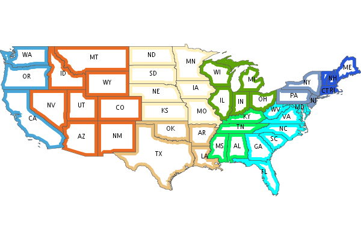Layer shp = new Shapefile("states.shp") Function func = new Function("Recode(SUB_REGION,'N Eng','#6495ED','Mid Atl','#B0C4DE','S Atl','#00FFFF', 'E N Cen','#9ACD32','E S Cen','#00FA9A','W N Cen','#FFF8DC','W S Cen','#F5DEB3','Mtn','#F4A460','Pacific','#87CEEB')") shp.style = (new Fill(func).composite("multiply", symbolizer: false, base: true)).zindex(1) + (new Stroke("black", 10).composite("destination-in", symbolizer: false)).zindex(2) + (new Stroke("#999999", 0.1) + new Label("STATE_ABBR").point([0.5, 0.5])).zindex(3) Map map = new Map( layers: [shp], backgroundColor: "white" ) map.render(new File("style_composite.png"))Workspace
GeoPackage Workspace Layers are now compatible with GDAL/OGR, QGIS, and ArcMap.
To make sure that Workspaces are closed you can use the new Workspace.withWorkspace(Workspace, Closure) idiom:
Workspace.withWorkspace(new H2(folder.newFile("roads.db").absolutePath)) { Workspace w -> // Use the Workspace here }Layer
The Shapefile Layers gets zip and unzip methods:
Shapefile shp = new Shapefile(new File(dir, "states.shp")) // Zip the Shapefile's files File zipFile = shp.zip() // Unzip Shapefile shp2 = Shapefile.unzip(zipFile)Remove new lines from content in CsvWriter
Fixed a bug with Groovy and Layer.reproject
The Schema class gets a getSpec() method:
Schema schema = new Schema("widgets", [ new Field("geom","Point"), new Field("name","string"), new Field("price","float") ]) println schema.spec >>> "geom:Point,name:String,price:Float"Raster
Format.getFormat() accepts inputs besides file
The Raster class has a new extractFootPrint() method:
File file = new File("raster.tif") GeoTIFF geoTIFF = new GeoTIFF(file) Raster raster = geoTIFF.read() Layer layer = raster.extractFootPrint()Rendering
ASCII Map Renderer:
Layer layer = new Shapefile(new File("states.shp")) layer.style = new Stroke('black', 0.1) + new Fill('gray', 0.75) Map map = new Map(layers: [layer], backgroundColor: "white") ASCII renderer = new ASCII(width: 50)Here is the output:
.................................................. .................................................. .................................................. .................................................. .................................................. .................................................. ..)))))$))))))))))))))))))........................ )))))))))))))))))))))))))))))).................... +)))))))))))))))))))))))))))))))-):............)). .))))))))$))))))))))))))))))))))^.))..........-))+ :)))))))))))))))))))))))))))$))).)))......)):)$).. ))))))))))))))))))+****))))))))).))))...))))*))... )))))))))))))))))))))))))))))))).)))..)))))))))... )))))))))))))-))))))))))))))))))))$))))))))):..... .))))))))))))+))))))))))))))))))))*))))+%)$+...... .))))))))))))+))))))))))))))))))))))%))))))....... ..)))))))))))+))))))))))))))))$)))))*))))*........ ...))))))))))$))))))))))))))))))))))%)))):?....... ...:)))))))))$))))))))))))))))))))))))+)))........ ......)))))))$)))))))))))))))))-)))))))).......... ......-.*))))$))))))))))))$)))))))))))!........... ............:$..)))))))))))))))))))))*............ .................)))))))))))))!..:)))^............ ..................-..)))))..........))............ .....................)))............%)............ ......................)).............))........... .................................................. .................................................. .................................................. .................................................. .................................................. .................................................. ..................................................Development
Started using Travis CI
1.4.0¶
The 1.4 release of GeoScript is built on Groovy 2.2, GeoTools 12, and the Java Topology Suite 1.13.
In addition to many bug fixes and performance improvements, the major new features include a tile module, GeoPackage support, curved geometry types, and quick start docs for maven and gradle.
Tile Module
The tile module provides simple ways to consume and create tiled maps.
Supported tiled formats include:
MBTiles
GeoPackage
UTFGrid
TMS
OSM
You can create tiles in MBTiles, GeoPackage, TMS, or OSM formats:
Shapefile shp = new Shapefile(new File("states.shp")) shp.style = new Fill("wheat") + new Stroke("navy", 0.1) File file = new File("states.mbtiles") MBTiles mbtiles = new MBTiles(file, "states", "A map of the united states") TileRenderer renderer = new ImageTileRenderer(mbtiles, shp) TileGenerator generator = new TileGenerator(verbose: true) generator.generate(mbtiles, renderer, 0, 4)You can then use these tile sets to extract Rasters or as base maps when rendering:
OSM osm = new OSM("Stamen Terrain", [ "http://a.tile.stamen.com/terrain", "http://b.tile.stamen.com/terrain", "http://c.tile.stamen.com/terrain", "http://d.tile.stamen.com/terrain" ]) Shapefile shp = new Shapefile("states.shp") ["North Dakota", "Oregon", "Washington"].each { String name -> shp.getFeatures("STATE_NAME = '${name}'").each { Feature f -> Bounds b = f.geom.bounds.expandBy(0.5) b.proj = "EPSG:4326" Raster raster = osm.getRaster(b.reproject("EPSG:3857"), 400, 400) ImageIO.write(raster.image, "png", new File("images", "${name}.png")) } }GeoPackage
GeoPackage support includes a Workspace (geoscript.workspace.GeoPackage) for vector features:
Workspace geopkg = new GeoPackage(folder.newFile("geopkg.gpkg")) try { // Get the States Shapefile File file = new File(getClass().getClassLoader().getResource("states.shp").toURI()) Shapefile shp = new Shapefile(file) // Add states shapefile to the GeoPackage database Layer l = geopkg.add(shp, 'states') geopkg.get('states').eachFeature { Feature f -> println "${f['STATE_NAME']} at ${f.geom}" } // Add the centroids of each state to the GeoPackage database Layer l2 = geopkg.add(shp.transform("state_centroids", [ geom: "centroid(the_geom)", abbr: "STATE_ABBR", name: "STATE_NAME" ])) geopkg.get('state_centroids').eachFeature { Feature f -> println "${f['STATE_NAME']} at ${f.geom}" } } finally { geopkg.close() }And a TileLayer (geoscript.layer.GeoPackage) for tiled layers:
Shapefile shp = new Shapefile(new File("states.shp")) shp.style = new Fill("wheat") + new Stroke("navy", 0.1) File file = new File("states.mbtiles") GeoPackage gpkg = new GeoPackage(file, "states", Pyramid.createGlobalMercatorPyramid()) TileRenderer renderer = new ImageTileRenderer(gpkg, shp) TileGenerator generator = new TileGenerator(verbose: true) generator.generate(gpkg, renderer, 0, 4)Curved Geometries
CircularString:
CircularString cs = new CircularString( new Point(6.12, 10.0), new Point(7.07, 7.07), new Point(10.0, 0.0) )CircularRing:
CircularRing cr = new CircularRing( new Point(2, 1), new Point(1, 2), new Point(0, 1), new Point(1, 0), new Point(2, 1) )CompoundCurve:
CompoundCurve cc = new CompoundCurve( new CircularString([10.0, 10.0], [0.0, 20.0], [-10.0, 10.0]), new LineString([-10.0, 10.0], [-10.0, 0.0], [10.0, 0.0], [5.0, 5.0]) )CompoundRing:
CompoundRing cc = new CompoundRing( new CircularString([10.0, 10.0], [0.0, 20.0], [-10.0, 10.0]), new LineString([-10.0, 10.0], [-10.0, 0.0], [10.0, 0.0], [10.0, 10.0]) )Quick start docs
Maven Create a simple app using Maven
Maven Web App with JNDI Create a web app with Maven using JNDI
Gradle Create a simple app using Gradle
API Updates
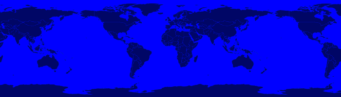
Workspace.has(String name):
Workspace workspace = new Memory() if (!workspace.has("points")) { workspace.create("points", [["the_geom", "Point", "EPSG:4326"]]) }Raster.selectBands(List<Integer> bands, int visibleBand = -1):
File file = new File("alki.tif") GeoTIFF geoTIFF = new GeoTIFF(file) Raster raster = geoTIFF.read() Raster rbRaster = raster.selectBands([0,2], 2)Raster.transform(Map options = [:]):
File file = new File("raster.tif") GeoTIFF geoTIFF = new GeoTIFF(file) Raster raster = geoTIFF.read() // Scale Raster scaledRaster = raster.transform(scalex: 2.5, scaley: 1.3) // Shear Raster shearRaster = raster.transform(shearx: 1.5, sheary: 1.1) // Translate Raster translatedRaster = raster.transform(translatex: 10.1, translatey: 12.6) // Combo Raster transformedRaster = raster.transform( scalex: 1.1, scaley: 2.1, shearx: 0.4, sheary: 0.3, translatex: 10.1, translatey: 12.6, nodata: [-255], interpolation: "NEAREST" )Projection.getEpsg():
Projection p = new Projection("EPSG:2927") int epsg = p.epsgAdded advanced projection handling and continous map wrapping to the Map Renderer:
import geoscript.layer.* import geoscript.render.* import geoscript.style.* import geoscript.geom.* Shapefile layer = new Shapefile(new File("110m_admin_0_countries.shp")) layer.style = new Stroke("#eee", 0.1) + new Fill("#666") File file = new File("world.png") Map map = new Map( layers: [layer], width: 700, height: 200, backgroundColor: "blue", proj: "EPSG:4326", bounds: new Bounds(-180,-90,180,90,"EPSG:4326") ) map.render(file)
Base64 Renderer:
Layer layer = new Shapefile(new File("states.shp")) layer.style = new Stroke('black', 0.1) + new Fill('gray', 0.75) Map map = new Map(layers: [layer], backgroundColor: "white") Base64 base64 = new Base64() String str = base64.render(map)Moved static Writer variables inside methods
Fixed performance problem with writing Layers to GeoRSS feeds due Proj.getId() being realllllly slow
Added ImageAssert tests
Workspace.getParametersFromString can now handle spatialite database files
Removed deprecated raster methods
Removed deprecated addSqlView methods from Database Workspace
1.3.1¶
The 1.3.1 release of GeoScript is built on Groovy 2.1.9, GeoTools 11.2, and the Java Topology Suite 1.13. It contains a few minor bug fixes and performance improvements.
Fixed a bug with Layer.first() call if there are no features
Added Projection.getEpsg() method
Fixed bug with JPEG renderer
Added Image.getImageType() method
Improved performance of the Layer GeoRSS writer
Added Base64 renderer
Moved static io reader/writers to instance variables
1.3¶
The 1.3 release of GeoScript is built on Groovy 2.1.9, GeoTools 11.0, and the Java Topology Suite 1.13.
Layer Geoprocessing and Layer Algebra
Layer Geoprocessing
Split by Field
Split a Layer into multiple Layers using the value of a Field:
Memory workspace = new Memory() layer.split(layer.schema.get("col"), workspace)Split by Layer
Split a Layer into multiple Layers based on the Features from the split Layer:
Memory workspace = new Memory() layer.split(splitLayer,splitLayer.schema.get("row_col"),workspace)Buffer
Buffer all of the Features in the Layer. The buffer distance can be a geoscript.filter.Expression or a double. This allows variable distance buffers that depend on the value of a Field, a Function, or an Expression:
layer.buffer(2) layer.buffer(new geoscript.filter.Property("col")) layer.buffer(geoscript.filter.Expression.fromCQL("col * 2")) layer.buffer(new geoscript.filter.Function("calc_buffer(row,col)", {row, col -> row + col}))Merge
Merge a Layer with another Layer to create an output Layer.
Dissolve
Dissolve the Features of a Layer by a Field or dissolve intersecting Features of a Layer.
Layer Algebra
The layer algebra methods were inspired by similar work done by the GDAL developers. The following examples use the GDAL dataset.
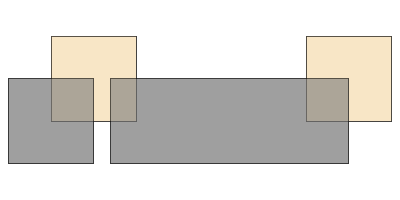
clip:
layerA.clip(layerB)
union:
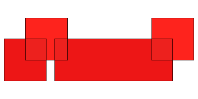layerA.union(layerB)intersection:
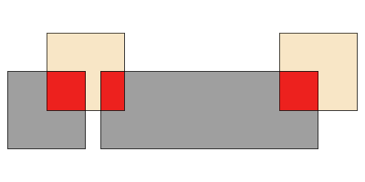layerA.intersection(layerB)erase:
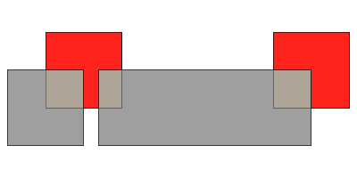layerA.erase(layerB)identify:
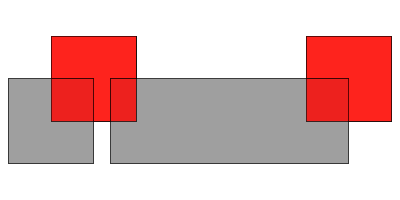layerA.identity(layerB)update:
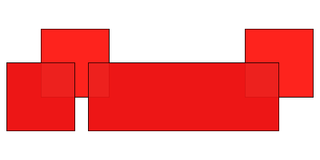layerA.update(layerB)symDifference:
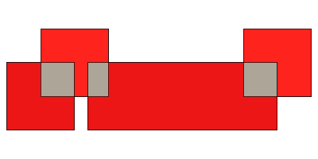layerA.symDifference(layerB)Add batches of Features to a Layer
The geoscript.layer.Writer class adds batches of Features to a Layer with a Transaction:
Writer writer = new Writer(layer, batch: 1000, transaction: 'default') try { Feature f = writer.newFeature writer.add(f) } finally { writer.close() } Writer writer = Writer.write(layer, batch: batch) { writer -> pts.eachWithIndex{Point pt, int i -> Feature f = writer.newFeature f.geom = pt f['id'] = i writer.add(f) } }GeoScript Layers have a getWriter() and withWriter() methods:
Writer writer = layer.getWriter(autoCommit: false, batch: 75) try { pts.eachWithIndex{Point pt, int i -> writer.add(s.feature([the_geom: pt, id: i], "point${i}")) } } finally { writer.close() } layer.withWriter(batch: 45) {Writer writer -> pts.eachWithIndex{Point pt, int i -> writer.add(s.feature([the_geom: pt, id: i], "point${i}")) } }Database Workspace
Improve SQL view layers by introducing createView and deprecating addSqlQuery:
Layer layer = h2.createView("state","SELECT * FROM \"states\" WHERE \"STATE_ABBR\" = '%abbr%'", new Field("the_geom","Polygon","EPSG:4326"), params: [['abbr', 'TX']])Add groovy.sql.Sql access for all Database based Workspace with the getSql() method. This allows you to do arbitray SQL queries:
H2 h2 = new H2(folder.newFile("h2.db")) Layer l = h2.create('widgets',[new Field("geom", "Point"), new Field("name", "String")]) l.add([new Point(1,1), "one"]) l.add([new Point(2,2), "two"]) l.add([new Point(3,3), "three"]) // Get groovy.sql.Sql def sql = h2.sql // Count rows assertEquals 3, sql.firstRow("SELECT COUNT(*) as count FROM \"widgets\"").get("count") as int // Query List names = [] sql.eachRow "SELECT \"name\" FROM \"widgets\" ORDER BY \"name\" DESC", { names.add(it["name"]) } println names // Insert sql.execute("INSERT INTO \"widgets\" (\"geom\", \"name\") VALUES (ST_GeomFromText('POINT (6 6)',4326), 'four')") // Query sql.eachRow "SELECT ST_Buffer(\"geom\", 10) as buffer, \"name\" FROM \"widgets\"", {row -> Geometry poly = Geometry.fromWKB(row.buffer as byte[]) assertNotNull poly assertTrue poly instanceof Polygon assertNotNull row.name } h2.close()The H2 Workspace can connect to H2 databases using server mode:
H2 h2 = new H2("database", "localhost", "5432", "public", "sa", "supersecret")JNDI support for PostGIS, MySQL, H2:
PostGIS postgis = new PostGIS("java:comp/env/jdbc/geoscript", schema: "public")PostGIS can create or drop database:
PostGIS postgis = new PostGIS("database", createDatabase: true, createDatabaseParams: "")Database Workspaces can create, delete, list indexes:
// Add two indexes h2.createIndex("widgets","geom_idx","geom",false) h2.createIndex("widgets","name_idx","name",true) // Get the indexes List indexes = h2.getIndexes("widgets") // Delete the geom index h2.deleteIndex("widgets","geom_idx")Database Workspace can remove layers:
h2.remove("points")Raster
NetCDF Raster support:
NetCDF netcdf = new NetCDF(file) netcdf.names.each{ String name -> Raster raster = netcdf.read(name) println raster.bounds raster.dispose() }API Change to Raster/Format API
In order to support NetCDF Rasters, the Raster Format API was changed. Contructors with a File or other way to connect to Rasters, write methods that contain the destination, or read methods that contain the source have all been deprecated and will be removed in the next release. Instead, use contructors that contain a source or destination File, and read and write methods that take an optional Raster name (in order to support Formats that can contain more than one Raster such as NetCDF).
Instead of:
GeoTIFF geotiff = new GeoTIFF() Raster raster = geotiff.read(new File("world.tiff")) geotiff.write(raster.crop(new Bounds(10,10,50,50)), new File("cropped_world.tiff"))Please use the new API:
GeoTIFF geotiff = new GeoTIFF(new File("world.tiff")) Raster raster = geotiff.read() new GeoTIFF(new File("cropped_world.tiff")).write(raster.crop(new Bounds(10,10,50,50)))Raster.crop(Geometry):
GeoTIFF geoTIFF = new GeoTIFF(new File("alki.tiff")) Raster raster = geoTIFF.read() Geometry geometry = new Point(1166761.4391797914, 823593.195575958).buffer(400) Raster cropped = raster.crop(geometry)IO Readers/Writers
GPX Geometry:
GpxReader reader = new GpxReader() Geometry g = reader.read("<wpt lat='2.0' lon='1.0'/>") assert "POINT (1 2)" == g.wkt GpxWriter writer = new GpxWriter() assert "<wpt lat='2.0' lon='1.0'/>" == writer.write(new Point(1, 2))GPX Feature:
String gpx = """<wpt lat="0.0" lon="0.0"> <name>1</name> <desc>This is feature # 1</desc> <type>Trail</type> <ele>45.2</ele> <time>1/20/14 1:47 PM</time> </wpt>""" GpxReader reader = new GpxReader() Feature feature = reader.read(gpx) GpxWriter writer = new GpxWriter( name: new Property("id"), time: "1/20/14 1:47 PM", description: { Feature f -> "This is feature #${f['id']}" }, type: "Trail" ) String gpx = writer.write(feature) assert gpx == "<wpt lat='0.0' lon='0.0' xmlns='http://www.topografix.com/GPX/1/1'>" + "<name>1</name><desc>This is feature #1</desc>" + "<type>Trail</type><time>1/20/14 1:47 PM</time></wpt>"GPX Layer:
String gpx = """<?xml version="1.0" encoding="UTF-8"?> <gpx xmlns="http://www.topografix.com/GPX/1/1" version="1.1" creator="geoscript"> <wpt lat="0.0" lon="0.0"> <name>1</name> <desc>This is feature # 1</desc> <type>Trail</type> <ele>45.2</ele> <time>1/20/14 1:47 PM</time> </wpt> </gpx>""" GpxReader reader = new GpxReader(type: GpxReader.Type.WayPoints) Layer layer = reader.read(gpx) GpxWriter writer = new GpxWriter( name: new Property("id"), time: "1/20/14 1:47 PM", description: {Feature f -> "This is feature # ${f['id']}"}, type: "Trail" ) String gpx = writer.write(layer)Kml IO rewritten to use Groovy’s markup builder
Geometry:
KmlWriter writer = new KmlWriter() Point p = new Point(111,-47) assert "<Point><coordinates>111.0,-47.0</coordinates></Point>" == writer.write(p) KmlReader reader = new KmlReader() Point pt = reader.read("<Point><coordinates>111.0,-47.0</coordinates></Point>") assert "POINT (111 -47)" == pt.wktFeature:
String kml = """<kml:Placemark xmlns:kml="http://earth.google.com/kml/2.1" id="house1"> <kml:name>House</kml:name> <kml:Point> <kml:coordinates>111.0,-47.0</kml:coordinates> </kml:Point> </kml:Placemark>""" KmlReader reader = new KmlReader() Feature f = reader.read(kml) Schema schema = new Schema("houses", [new Field("geom","Point"), new Field("name","string"), new Field("price","float")]) Feature feature = new Feature([new Point(111,-47), "House", 12.5], "house1", schema) KmlWriter writer = new KmlWriter() assert """<kml:Placemark xmlns:kml="http://earth.google.com/kml/2.1" id="house1"> <kml:name>House</kml:name> <kml:Point> <kml:coordinates>111.0,-47.0</kml:coordinates> </kml:Point> </kml:Placemark>""" == writer.write(feature)Layer:
String kml = """<kml:kml xmlns:kml="http://earth.google.com/kml/2.1"> <kml:Document id="featureCollection"> <kml:Placemark id="fid--259df7e1_131b6de0b8f_-8000"> <kml:name>House</kml:name> <kml:Point> <kml:coordinates>111.0,-47.0</kml:coordinates> </kml:Point> </kml:Placemark> <kml:Placemark id="fid--259df7e1_131b6de0b8f_-7fff"> <kml:name>School</kml:name> <kml:Point> <kml:coordinates>121.0,-45.0</kml:coordinates> </kml:Point> </kml:Placemark> </kml:Document> </kml:kml>""" KmlReader reader = new KmlReader() Layer layer = reader.read(kml) Schema schema = new Schema("houses", [new Field("geom", "Point"), new Field("name", "string"), new Field("price", "float")]) Memory memory = new Memory() Layer layer = memory.create(schema) layer.add(new Feature([new Point(111, -47), "House", 12.5], "house1", schema)) layer.add(new Feature([new Point(121, -45), "School", 22.7], "house2", schema)) KmlWriter writer = new KmlWriter()GeoRSS IO using Groovy’s markup builder and xml parser
Geometry:
GeoRSSReader reader = new GeoRSSReader() Point p = reader.read("<georss:point>45.256 -71.92</georss:point>") assert "POINT (-71.92, 45.256)" == p.wkt GeoRSSWriter writer = new GeoRSSWriter() Point p = new Point(-71.92, 45.256) assert "<georss:point>45.256 -71.92</georss:point>" == writer.write(p)Feature:
GeoRSSReader reader = new GeoRSSReader() String str = "<entry xmlns:georss='http://www.georss.org/georss' xmlns='http://www.w3.org/2005/Atom'>" + "<title>house1</title>" + "<summary>[geom:POINT (111 -47), name:House, price:12.5]</summary>" + "<updated>12/7/2013</updated>" + "<georss:point>-47.0 111.0</georss:point>" + "</entry>" Feature feature = reader.read(str) GeoRSSWriter writer = new GeoRSSWriter(feedType: "atom", geometryType: "gml", itemDate: "12/7/2013") assert "<entry xmlns:georss='http://www.georss.org/georss' xmlns='http://www.w3.org/2005/Atom' " + "xmlns:gml='http://www.opengis.net/gml'>" + "<title>house1</title>" + "<summary>[geom:POINT (111 -47), name:House, price:12.5]</summary>" + "<updated>12/7/2013</updated>" + "<georss:where><gml:Point><gml:pos>-47.0 111.0</gml:pos></gml:Point></georss:where>" + "</entry>" == writer.write(feature)Layer:
GeoRSSReader reader = new GeoRSSReader() Layer layer = reader.read("""<?xml version="1.0" encoding="utf-8"?> <feed xmlns="http://www.w3.org/2005/Atom" xmlns:georss="http://www.georss.org/georss"> <title>Earthquakes</title> <subtitle>International earthquake observation labs</subtitle> <link href="http://example.org/"/> <updated>2005-12-13T18:30:02Z</updated> <author> <name>Dr. Thaddeus Remor</name> <email>tremor@quakelab.edu</email> </author> <id>urn:uuid:60a76c80-d399-11d9-b93C-0003939e0af6</id> <entry> <title>M 3.2, Mona Passage</title> <link href="http://example.org/2005/09/09/atom01"/> <id>urn:uuid:1225c695-cfb8-4ebb-aaaa-80da344efa6a</id> <updated>2005-08-17T07:02:32Z</updated> <summary>We just had a big one.</summary> <georss:box>42.943 -71.032 43.039 -69.856</georss:box> </entry> </feed>""") GeoRSSWriter writer = new GeoRSSWriter( feedType: "atom", geometryType: "simple", itemDate: "1/22/1975", itemTitle: new Property("name"), itemDescription: { Feature f -> f['description'] } ) Schema schema = new Schema("points", [ ["geom", "Point"], ["name", "string"], ["description", "string"], ["id", "int"] ]) Workspace workspace = new Memory() Layer layer = workspace.create(schema) layer.withWriter { writer -> writer.add(schema.feature([geom: "POINT (1 1)", name: "Washington", description: "The state of Washington", id: 1], "state.1")) writer.add(schema.feature([geom: "POINT (2 2)", name: "Oregon", description: "The state of Oregon", id: 2], "state.2")) writer.add(schema.feature([geom: "POINT (3 3)", name: "California", description: "The state of California", id: 3], "state.3")) } println writer.write(createLayer())geoscript.layer.io.GeoJSONReader supports reading features that have different schemas
geoscript.feature.Feature now has getGeoJSON(), getGeoRSS(), getKml(), getGml() methods
Removed JDOM dependency with Groovy’s native XML support
Removed org.json dependency with GeoTools GeoJSON support
Rendering
Randomized Fill:
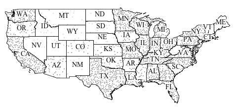import geoscript.layer.Shapefile import geoscript.render.Draw import geoscript.style.* shp = new Shapefile("states.shp") shp.style = (new Fill(null).hatch("circle", new Fill("#aaaaaa"), 1).random([random: "free", symbolCount: "50", tileSize: "100"]).where("PERSONS < 2000000")) + (new Fill(null).hatch("circle", new Fill("#aaaaaa"), 2).random([random: "free", symbolCount: "200", tileSize: "100"]).where("PERSONS BETWEEN 2000000 AND 4000000")) + (new Fill(null).hatch("circle", new Fill("#aaaaaa"), 2).random([random: "free", symbolCount: "700", tileSize: "100"]).where("PERSONS > 4000000")) + (new Stroke("black", 0.1) + new Label(property: "STATE_ABBR", font: new Font(family: "Times New Roman", style: "normal", size: 14)).point([0.5, 0.5]).halo(new Fill("#FFFFFF"), 2)) println shp.style.sld Draw.draw(shp)Hatch can take fill and stroke:
Hatch hatch = new Hatch("circle", new Fill("red"), new Stroke("wheat",0.1), 10)geoscript.render.Draw now accepts an optional backgroundColor parameter:
Symbolizer sym = new Stroke('black', 2) + new Fill('gray',0.75) Geometry geom = new Point(0,0).buffer(0.2) draw(geom, style: sym, bounds: geom.bounds.scale(1.1), size: [250,250], format: "png", backgroundColor: "white")geoscript.render.Map is updated and deprecated class have been removed. This was contributed by Scott Bortman. Thanks Scott!
API Updates
GeometryCollections now have a slice method that takes a start index and an optional end index:
import geoscript.geom.* GeometryCollection g = Geometry.fromWKT("MULTIPOINT ((1 1), (2 2), (3 3), (4 4), (5 5))") assert "MULTIPOINT ((2 2), (3 3))" == g.slice(1,3).wktWhen the end index is absent it defaults to the end of the collection:
assert "MULTIPOINT ((3 3), (4 4), (5 5))" == g.slice(2).wktBoth the start and end index may be negative:
assert "MULTIPOINT ((3 3), (4 4), (5 5))" == g.slice(-3).wkt assert "MULTIPOINT ((2 2), (3 3))" == g.slice(-4, -2).wktGet the angle between this Point and another Point:
assert 45 == new Point(0,0).getAngle(new Point(10,10)) assert -135, new Point(0,0).getAngle(new Point(-10,-10), "degrees") assert 2.3561 == new Point(0,0).getAngle(new Point(-10,10), "radians")Get the azimuth between this Point and the other Point:
assert 44.75 == new Point(0,0).getAzimuth(new Point(10,10)) assert 135.24 == new Point(0,0).getAzimuth(new Point(10,-10))Fields now have a isGeometry() method.
You can set the values of a Feature by passing in a Map:
feature.set([price: 1200.5, name: "Car"]) feature.set(price: 12.2, name: "Book")Or by passing in an existing Feature:
Feature feature = schema.feature([geom: new Point(121,-49), price: 15.6, name: "Test"]) newFeature.set(feature)Schema now has a way to create new Features with default values:
Feature f = schema.feature()Schema can also create new Features from an existing Feature:
Feature f = schema.feature(existingFeature)When a Schema creates a Feature, the default ID is now created by the GeoTools SimpleFeatureBuilder’s createDefaultFeatureId() method.
Command line programs
Add -Dorg.geotools.referencing.forceXY=true to all command line programs
1.2¶
The 1.2 release of GeoScript was built on Groovy 2.1.6, GeoTools 10.0, and Java Topology Suite 1.13.
The focus was on upgrading to a modern and supported version of Groovy and a few small features and bug fixes.
Upgrades
Upgrade to GeoTools 10
Upgrade to Groovy 2.1.6
Upgrade to GeoCSS 0.8.3
Features
The geoscript.layer.io.Readers can now take optional projection, workspace, name parameters
The geoscript.layer.io.CsvReader and CsvWriter by default now encode Field type in the header but this can be disabled
Added a MultiLineString.polygonizeFull() method that returns a Map with polygons, cut edges, dangles, and invalid ring lines.
Added Schema.includeFields to create a new Schema from an existing Schema with a subset of fields
Bug Fixes
Fixed Cursor paging bug - it’s start and max not start and end
Fixed CsvReader bug couldn’t guess WKT when it was formatted without a space (“POINT(1 1)” instead of “POINT (1 1)”)
1.1.1¶
The 1.1.1 release of GeoScript Groovy just fixes a few minor bugs.
Bug Fixes
Fixed Cursor paging bug - it’s start and max not start and end
Fixed CsvReader bug couldn’t guess WKT when it was formatted without a space (“POINT(1 1)” instead of “POINT (1 1)”)
1.1¶
The 1.1 release of GeoScript was built on Groovy 1.8.9, GeoTools 9.x, and Java Topology Suite (JTS) 1.13
The focus was on adding a Raster support (geoscript.layer), Charting (geoscript.plot), and numerous bug fixes and small features.
Raster
Format (ArcGri, GeoTIFF, GTopo30, Grass, ImagePyramid, MrSID, WorldImage)
Formats allow you to read and write Rasters:
import geoscript.layer.* def format = new GeoTIFF() def raster = format.read(new File("raster.tif")) def format2 = new WorldImage() format2.write(raster, new File("raster.png"))Raster:
import geoscript.layer.* def format = new GeoTIFF() def raster = format.read(new File("raster.tif")) println raster.proj.id println raster.bounds println raster.sizeBand:
import geoscript.layer.* def format = new GeoTIFF() def raster = format.read(new File("raster.tif")) raster.bands.eachWithIndex{b,i -> println "Band ${i}:" println " Min: ${b.min}" println " Max: ${b.max}" println " NoData: ${b.noData}" println " Unit: ${b.unit}" println " Scale: ${b.scale}" println " Offset: ${b.offset}" println " Type: ${b.type}" }MapAlgebra (which is powered by Jiffle):
import geoscript.layer.* def format = new GeoTIFF() def raster = format.read(new File("raster.tif")) Raster rasterPlusTen = raster + 10 MapAlgebra algebra = new MapAlgebra() Raster output = algebra.calculate("dest = src > 200;", [src: raster], size: [600, 400])Process
Raster support was added to the Process module (geoscript.process.Process) which opens up numerous geospatial algorithms like heatmap, barnes surface, and raster algebra.:
Process process = new Process("vec:BarnesSurface") results = process.execute([ data: layer.cursor, valueAttr: "value", scale: 300, convergence: 0.3, passes: 2, minObservations: 1, maxObservationDistance: 0, pixelsPerCell: 1, noDataValue: -999, outputWidth: 100, outputHeight: 100, outputBBOX: layer.bounds ]) Raster raster = results.resultStyle
Raster specific Symbolizers were added to the geoscript.style module:
def raster = new RasterSymbolizer(0.5) def channel = new ChannelSelection("red", "green", "blue") def colorMap = new ColorMap([[color: "#008000", quantity:70], [color:"#663333", quantity:256]]) def c = new ContrastEnhancement("histogram", 0.5) def shadedRelief = new ShadedRelief(35, true)Rendering
The geoscript Rendering module (geoscript.render) now supports drawing Rasters:
import geoscript.layer.* import geoscript.render.* def format = new GeoTIFF() def raster = format.read(new File("raster.tif")) Draw.draw(raster) Map map = new Map(layers:[new Shapefile("states.shp"), raster]) def image = map.drawToImage()Plot
Chart
A Chart can be created by one of the factory classes (Bar, Box, Curve, Pie, Regression, and Scatter).Once created, you can display it as an interactive app, save it to a File, or save it to an Image:
Chart chart = Box.box(["A":[1,10,20],"B":[45,39,10],"C":[2,4,9],"D":[14,15,19]]) chart.show() chart.save(new File("bar.jpeg")) def image = chart.imageBar:
Chart chart = Bar.xy([[1,10],[45,12],[23,3],[5,20]]) Chart chart = Bar.category(["A":20,"B":45,"C":2,"D":14])Box:
Chart chart = Box.box(["A":[1,10,20],"B":[45,39,10],"C":[2,4,9],"D":[14,15,19]])Curve:
Chart chart = Curve.curve([[1,10],[45,12],[23,3],[5,20]])Pie:
Chart chart = Pie.pie(["A":20,"B":45,"C":2,"D":14])Regression:
def points = Geometry.createRandomPoints(new Bounds(0,0,100,100).geometry, 10) List data = points.geometries.collect{pt -> [pt.x,pt.y] }Scatter:
def points = Geometry.createRandomPoints(new Bounds(0,0,100,100).geometry, 10) List data = points.geometries.collect{pt -> [pt.x,pt.y] }General
Include GroovyDocs in zip distribution
Geometry
List<Point> getNearestPoints(Geometry other)
List<Point> getPoints()
Geometry smooth(double fit)
static Geometry cascadedUnion(List<Polygon> polygons)
static Geometry fromString(String str)
Polygon & MultiPolygon
Geometry split(LineString lineString)
Geometry split(MultiLineString multiLineString)
Schema
boolean has(def field)
Map addSchema(Map options = [:], Schema otherSchema, String newName)
Schema changeField(Field oldField, Field newField, String name)
Schema changeFields(Map<Field, Field> fieldsToChange, String name)
Schema addFields(List<Field> newFields, String name)
Schema addField(Field field, String name)
Schema removeField(Field field, String name)
Schema removeFields(List<Field> fieldsToRemove, String name)
Layer
Reproject features on the fly when using a Cursor:
Cursor c = layer.getCursor(destProj: "EPSG:2927")Set source projection when reprojecting Layers:
Layer layer2 = layer1.reproject(new Projection("EPSG:2927"), "projected_facilties", 1000, new Projection("EPSG:4326"))Add a List of Maps to a Layer inside of a Transaction:
layer1.add([ [geom: new Point(100,-45), name: "Point 1", price: 1.0], [geom: new Point(101,-46), name: "Point 2", price: 10.0], [geom: new Point(102,-47), name: "Point 3", price: 100.0], ])Layer.transform using gt-transform module:
Layer layer2 = layer.transform("buffered_facilities", [ geom: "buffer(geom, 10)", name: "strToUpperCase(name)", price: "price * 10" ])geoscript.layer.Property:
Property prop = new Property('states.properties')Feature first(Map options = [:])
Layer.update can take an Expression:
layer.update(s.get("price"), Expression.fromCQL("price * 2"))Layer.update(groovy script):
layer.update(s.get('name'), "return c + '). ' + f.get('name')", Filter.PASS, true)Layer reproject(Projection p, Workspace outputWorkspace, String newName, int chunk=1000, Projection sourceProjection = new Projection(“EPSG:4326”))
Reproject a Layer to another Layer in the given Workspace
Layer reproject(Layer projectedLayer, int chunk = 1000, Projection sourceProjection = new Projection(“EPSG:4326”))
Reproject a Layer to another Layer that already exists.
Layer getCursor(fields:[]):
layer.getCursor([fields: ["name"]])Layer IO
KmlReader and KmlWriter
Filter
Filter getNot():
new Filter("name='foo').not == new Filter("name<>'foot')Filter.simplify()
Expression
Object evaluate(Object obj = null):
Expression e = new Expression(12) assertEquals 12, e.evaluate()Bounds
void setProj(def projection)
static Bounds fromString(String str)
Bounds fixAspectRatio(int w, int h)
boolean contains(Bounds other)
double getAspect()
Geometry getGrid(int columns, int rows, String type = “polygon”)
Geometry getGrid(double cellWidth, double cellHeight, String type = “polygon”)
void generateGrid(int columns, int rows, String type, Closure c)
void generateGrid(double cellWidth, double cellHeight, String type, Closure c)
WMS
WMS:
WMS wms = new WMS("http://localhost:8080/geoserver/ows?service=wms&version=1.1.1&request=GetCapabilities") println "Name: ${wms.name}" println "Title: ${wms.title}" def image = wms.getImage("world:borders")WMSLayer:
WMS wms = new WMS("http://localhost:8080/geoserver/ows?service=wms&version=1.1.1&request=GetCapabilities") def map = new geoscript.render.Map( layers: [new WMSLayer(wms, ["world:borders","world:cities"])] ) map.render(new File("map_world.png"))Workspace
WFS:
def wfs = new WFS("http://localhost:8080/geoserver/ows?service=wfs&version=1.1.0&request=GetCapabilities", timeout: 9000)H2 constructor with database file instead of directory
Render
GIF
Image subclass that includes animated GIF support!:
Map map = new Map(layers: [layer], backgroundColor: "white") GIF gif = new GIF() def img = gif.render(map) Map map = new Map(layers: [layer], backgroundColor: "white") GIF gif = new GIF() List images = ["WA","OR","CA"].collect {state -> map.bounds = layer.getFeatures("STATE_ABBR = '${state}'")[0].bounds def image = gif.render(map) image } File file = File.createTempFile("image_",".gif") gif.renderAnimated(images, file, 500, true)PNG:
Map map = new Map(layers: [layer], backgroundColor: "white") PNG png = new PNG() def img = png.render(map)JPEG:
Map map = new Map(layers: [layer], backgroundColor: "white") JPEG jpeg = new JPEG() def img = jpeg.render(map)
1.0¶
The 1.0 release of GeoScript was built on Groovy 1.8.8, GeoTools 8.x and Java Topology Suite (JTS) 1.12.
The focus was the following modules:
Geometry (geoscript.geom)
Projection (geoscript.proj)
Vector Layers (geoscript.feature, geoscript.layer, geoscript.workspace)
Rendering (geoscript.viewer, geoscript.style, geoscript.render)
Process (geoscript.process)
Spatial Index (geoscript.index)
Expressions (geoscript.filter)